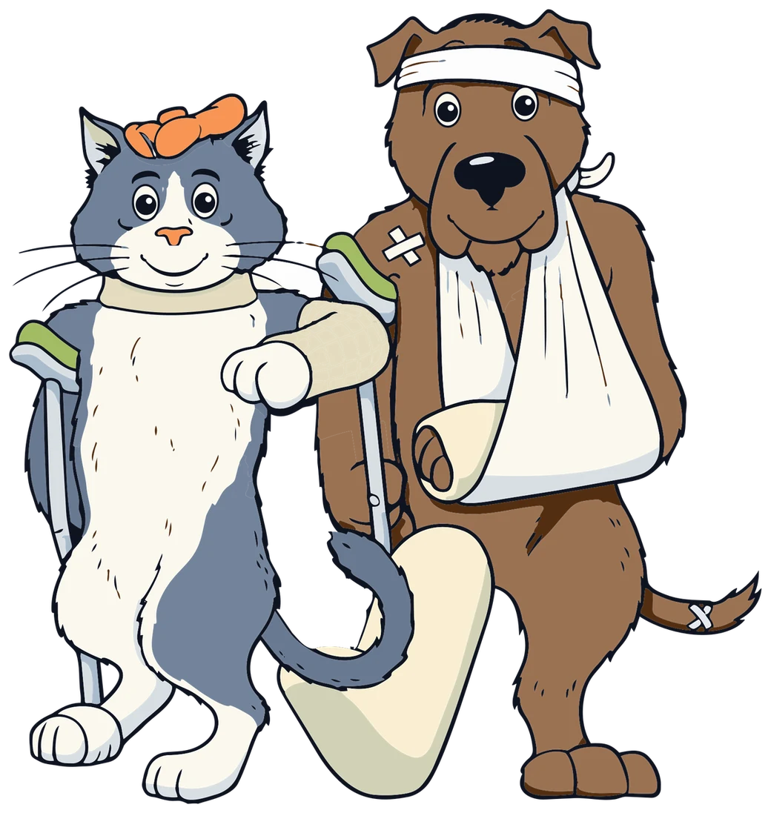

Pregledi, cijepljenja, kirurgija i hitni slučajevi za pse i mačke — uz puno strpljenja i malo humora.
Radno vrijeme s pacijentima
Pon–Pet 08–10 i 16–18 h
Sub 08–11 h
Odra Sisačka 1. lijevi pododvojak 12
44 000 Sisak

Radno vrijeme s pacijentima
Pon–Pet 08–10 i 16–18 h · Sub 08–11 h
Adresa
Odra Sisačka 1. lijevi pododvojak 12, 44 000 Sisak
Usluge
Od prvog cijepljenja šteneta do brige za starije mačke.
Redovite kontrole, savjetovanje o prehrani i praćenje zdravlja kroz sve životne faze.
Obavezna i preporučena cijepljenja, mikročipovi i putovnice za ljubimce.
Kastracije, sterilizacije i zahvati mekih tkiva uz nadzor anestezije.
Laboratorijske pretrage, [ultrazvuk] i [RTG] za brzu i točnu dijagnozu.
Čišćenje zubnog kamenca i pregled usne šupljine — za svjež dah i zdrave zube.
Zaštita od buha, krpelja i glista prilagođena načinu života vašeg ljubimca.
Zamijeniti sa slikama slučajeva
O nama
Iza imena Mario Veterina stoje godine iskustva, tisuće uspješnih zahvata i nebrojene priče o oporavku i zdravlju. Naša stručnost nije samo obećanje — ona je potvrđena certifikatima, kontinuiranim edukacijama i konkretnim rezultatima.
Predani smo pružanju pouzdane i kvalitetne skrbi koja vašim ljubimcima osigurava dug i zdrav život.
[X]+
Kirurških zahvata godišnje
[X]
Veterinara u timu
[X]+
Ortopedskih zahvata godišnje
[X]+
Liječenih ljubimaca godišnje
Kontakt
Radno vrijeme s pacijentima
Radno vrijeme ambulante
Hitni slučajevi izvan radnog vremena: [+385 XX XXX XXXX]